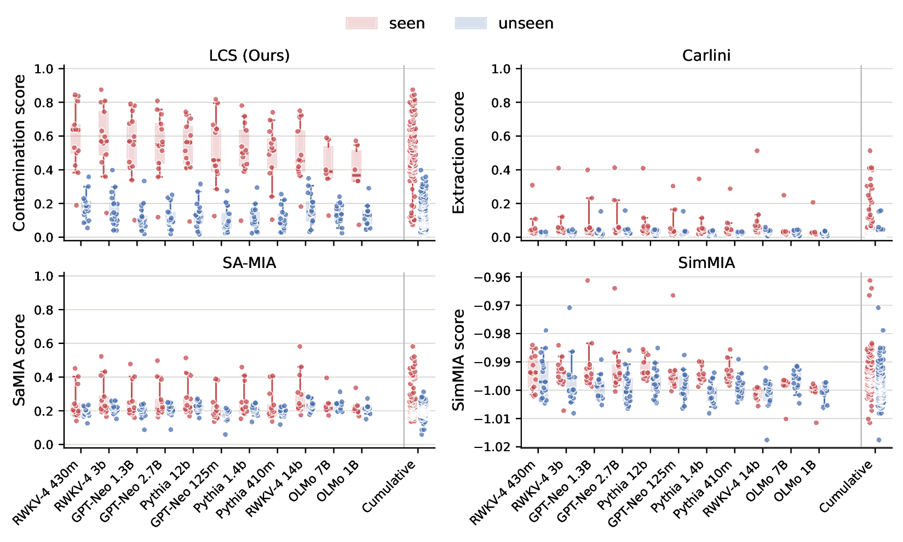
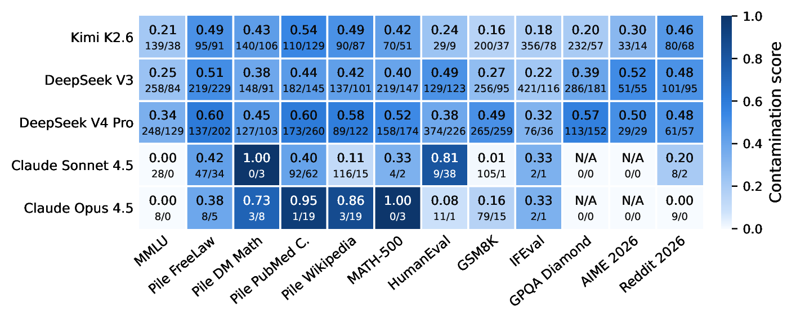

Abstract
Existing methods for assessing training data contamination in Large Language Models achieve high accuracy, but fundamentally rely on gray-box access, rendering them inapplicable to fully black-box environments. This limitation forces auditors to rely on full-sequence sampling or rigid heuristics, both of which incur prohibitive inference costs and struggle to isolate the underlying memorization signal. To overcome this, we propose a generation-based black-box framework that infers context-induced information gain from targeted token discrepancies. We introduce a budget-constrained auditing regime, building on the empirical observation that the membership signal is highly sparse and concentrated in a few highly informative tokens. We formalize this sparsity, showing why uniform sampling needs many more samples than a policy that targets informative positions. Empirically, our approach achieves state-of-the-art black-box separation accuracy while needing about 3× fewer queries than uniform position sampling. Finally, we apply this methodology to closed frontier models, exploring its capacity and limits in surfacing potential training data overlaps on commercial APIs.
Method
For each document we ask the model for its next token at a chosen position twice: once with and once without a short context built from the most similar other documents in the audited dataset. We record only whether the greedy token matches the ground truth, giving a shift δj ∈ {−1, 0, +1} per position. No log-probabilities are needed.
- Memorized text already has strong exact-match priors, so extra context mostly hurts (δ = −1).
- Unseen text has more room to improve, so context mostly helps (δ = +1) through in-context learning.
- Sparsity. Only ρ ≈ 0.1 of positions change at all. A Bernstein-bound argument shows uniform sampling needs about 1/ρ times more positions than a policy that targets informative ones.
- LCS token selection. We query tokens within the Longest Common Subsequence between the target document and the context, which concentrates the budget on informative positions.
Counting the shifts over the queried positions of a dataset D, with n+ positions where context helps (δ = +1) and n− positions where it hurts (δ = −1), the dataset-level contamination score is
It is the share of changed positions where context hurt. Seen data scores high, unseen data low. Positions with δ = 0 are ignored.
Uncovering the Tells
Run an audit step by step.
Results
We audit 11 open-weights base models (GPT-Neo, Pythia, RWKV-4, OLMo) whose training data is known, using 100 documents per dataset and only W = 16 queried tokens per document. Each model is tested on datasets it was trained on (seen) and on temporally separated datasets it could not have seen (unseen).
Seen and unseen data separate cleanly
With LCS, seen datasets score around 0.4–0.8 on every model, while unseen datasets stay mostly below 0.3. The two groups barely overlap, with a mean dataset-level AUC of 0.95. The other black-box methods are much weaker. Carlini's extraction attack and SimMIA pick out only a few seen datasets, and SA-MIA is close to chance.

| Black-box method | Mean dataset-level AUC |
|---|---|
| Carlini (extraction) | 0.732 |
| SimMIA | 0.674 |
| SA-MIA | 0.562 |
| LCS (Ours) | 0.952 |
On par with gray-box methods
LCS only sees the tokens a model returns, yet it beats Loss, Min-K% and zlib, which need log-probabilities. It matches CoDeC in AUC (0.952 vs. 0.961) and detects more contaminated datasets at a 5% false-positive rate (TPR 0.893 vs. 0.698).
| Method | AUC | TPR@5%FPR |
|---|---|---|
| Loss | 0.585 | 0.120 |
| Min-K% | 0.599 | 0.134 |
| zlib | 0.759 | 0.147 |
| CoDeC (gray-box) | 0.961 | 0.698 |
| LCS (Ours, black-box) | 0.952 | 0.893 |
Few queries are enough
Detection saturates at W ≤ 30 tokens per document, close to an Oracle that knows which positions are informative. A naive audit needs about 3× more queries to reach the same accuracy. The signal also survives post-training: AUC stays the same or goes up after SFT and DPO for every model except OLMo 7B (0.910 → 0.859 after SFT).
Frontier models
We ran the audit through public APIs on Kimi-k2.6, DeepSeek-V3, DeepSeek-V4-Pro, Claude Sonnet 4.5 and Claude Opus 4.5, with at most 3,200 calls per dataset. Without public training data for these models, we use two 2026 datasets (AIME 2026, Reddit 2026) as controls that were published after the models' training.

- Kimi-k2.6 and DeepSeek. Older datasets score 0.4–0.6, but so do the controls (0.30–0.52). No dataset stands clearly above the baseline. MMLU scores at or below the controls on all five models.
- Saturation. Frontier models already predict most tokens of common text correctly without context, so fewer positions can flip and the score rests on only a handful of them.
- Claude. Even with assistant prefill, 93% of replies without context come back in assistant voice, and the target token appears at only about 1% of positions. Flip counts are tiny (for example 0/3 or 3/8), so the scores swing between 0 and 1.
The frontier model results are exploratory. The whole suite cost about $133 in API calls.
BibTeX
@article{uncoveringthetells,
title={Uncovering the Tells: Efficient Black-Box Audits for LLM Data Contamination},
author={Lau, Dominik B. and Pawlicki, Filip and Dubi{\'n}ski, Jan and Cygert, Sebastian},
journal={arXiv preprint arXiv:2611.30639},
year={2026},
url={https://arxiv.org/abs/2611.30639}
}